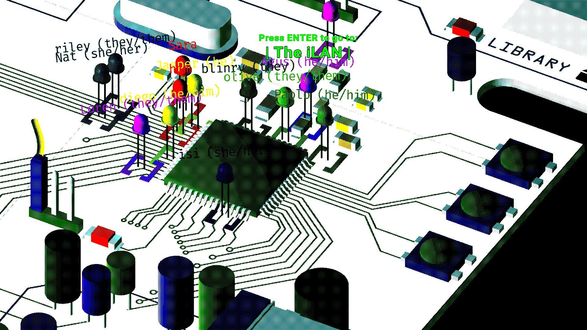

Fuzzy Binaires is seeking collaboration and community through our shared practices of open coding, tinkering, designing and making art. We work in the form of open workshop weeks with around 15 participants. Our aim is to co-create a space in which people feel comfortable to work along and through differences. We foster self-motivated and self-organized learning and think people learn best through following their curiosities and desires.
With the distribution of technology-based frameworks for creative inquiry, there have been intruiging, eclectic and interdisciplinary approaches towards the creation of artwork. Ideas and practices that date back to the 1970s are now widespread among art-making collectives that are successfully merging and creating dialogues between their own practice and the languages of computational devices. However, spaces for electronic arts making are rarely inclusive and diverse in regards to race, gender, disability, class etc.
Fuzzy Biniares believes that there are more barriers than just technical ones to enter technical spaces. Thus it is our mission to create a spacetime for arts and computation that is anti-racist, queer inclusive and accessible for disabled people. We believe that what can seem daunting at first, such as learning the technicalities that computers entail, is done best within communities that imagine computation beyond the exclusions that it currently performs.
The mission of Fuzzy Binaires is to gently bridge the gap between art and computation. It is to create the connections necessary to explore how practices like computer programming, video-game design or decentralized collaborative sharing can become suitable means of artistic creation.
Understanding how an algorithm can draw a brush stroke, how sensors can speak to senses, or how procedurally-generated narratives can drive a game's experience, is all part of the purpose of becoming a Fuzzy: It's about exploring the in-betweens as well as the end-points of the interface between humans and computers. Along the way, we will also learn about the ethical implications that technology carries with it, and we will critically think about and develop resistant material computational practices.
Becoming a Fuzzy Binary is also about building a community of like-minded artists and technologist who enjoy art and code, promoting an open and friendly environment, where ideas are encouraged and learning is done by fostering curiosity and joy. As Fuzzies, we try to create accessible programmes and priorite the applications of people often marginalized in the tech industry and in open source communities.
While each Fuzzy Binaires workshop week has its own theme, there are a few objectives that we put into practice in all proposed workshops and events: